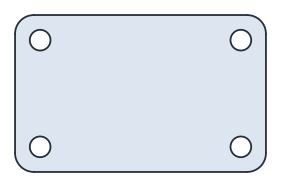
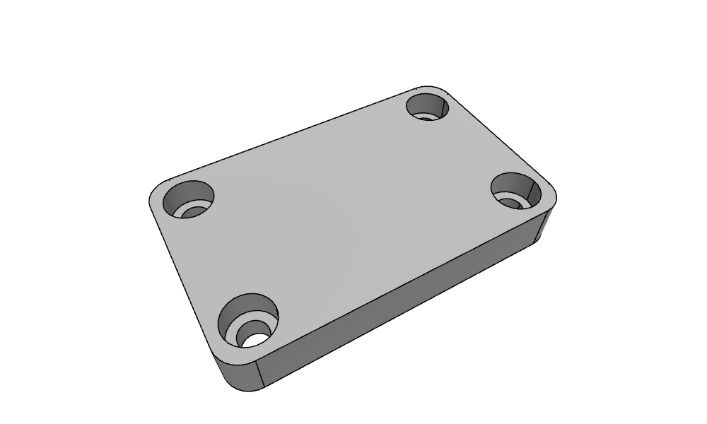
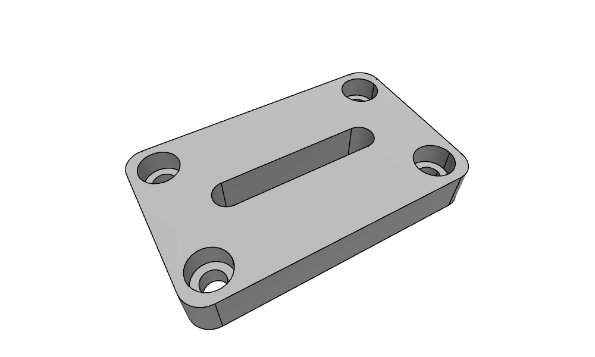

Pad and Pocket
px.Pad(profile, length) extrudes a planar face, shape or sketch into an OpenCASCADE solid, and px.Pocket(target, profile, length) cuts that extrusion out of a solid. Both are thin wrappers around the OpenCASCADE extrusion, ToOCCShape().Extrude(...), that take care of what is otherwise written by hand:
the direction along the plane’s normal, or against it for a pocket;
a length on both sides of the plane;
an end on a plane or a face instead of a length;
the names: every side face of the solid carries the name of the profile edge it comes from, so the faces can be selected by name for meshing and boundary conditions.
[1]:
import math
import netgen.occ as occ
from ngsolve_webgpu.jupyter import Draw
import planex as px
A clamp plate
The example is a clamp plate of 80 × 50, 12 thick, with corners rounded to a radius of 6 and four bolt holes of 6.6 on a 64 × 34 rectangle (Figure 1). The outline and the holes are one sketch, with the outline named side and the holes bolt hole. The holes are circles, which have no vertices, so Fillet(plate.vertices, 6) rounds exactly the four corners of the outline.
[3]:
thickness = 12.0
sketch = px.QuickSketch().RectangleC(80, 50, name="side")
for x in (-32, 32):
for y in (-17, 17):
sketch.Circle(x, y, 3.3, name="bolt hole")
plate = sketch.Face()
plate.Fillet(plate.vertices, 6)
plate.name = "plate"

px.Pad makes the solid. Its side faces carry the names of the edges they come from, the solid carries the name of the face, and the two end faces have no name. The volume is the area of the profile times the thickness:
[5]:
solid = px.Pad(plate, thickness)
print(solid.name, sorted({f.name for f in solid.faces if f.name}))
print("volume", solid.mass, "area × thickness", plate.mass * thickness)
plate ['bolt hole', 'side']
volume 45986.994714466215 area × thickness 45986.99471446634
The same solid comes from the OpenCASCADE extrusion of the exported face, and the difference between both is empty:
[6]:
by_hand = plate.ToOCCShape().Extrude(thickness)
print("OpenCASCADE extrusion", by_hand.mass, "difference", (solid - by_hand).mass)
OpenCASCADE extrusion 45986.994714466215 difference 0.0
Pockets from a sketch on the top face
The counterbores for M6 socket head screws, 11 wide and 6.5 deep, are sketched on the top face of the solid and cut with px.Pocket. A pocket runs against the normal of the sketch’s plane by default, into the material. px.QuickSketch(top) sketches on the top face, with the global origin and x axis projected onto it, so the coordinates in the sketch are those of the plate (Figure 2). See The plane in 3D for choosing another origin or axis.
[7]:
top = solid.faces.Max(occ.Z)
counterbores = px.QuickSketch(top)
for x in (-32, 32):
for y in (-17, 17):
counterbores.Circle(x, y, 5.5, name="counterbore")
clamp = px.Pocket(solid, counterbores, 6.5)
Draw(clamp, euler_angles=[-40, 0, 30])

With until=px.last, a pocket runs through the whole part, to the last flat face it crosses. The clamping slot, 40 long and 8 wide, is cut through the middle of the plate that way, from the same top face:
[8]:
slot = px.QuickSketch(top)
slot.Move((-20, 0)).Slot(40, 8, name="slot")
clamp = px.Pocket(clamp, slot, until=px.last)
Draw(clamp, euler_angles=[-40, 0, 30])

The volume is the plate minus four counterbore rings, 6.5 deep, and the slot through the full thickness:
[9]:
expected = solid.mass - 4 * math.pi * (5.5**2 - 3.3**2) * 6.5 - slot.Face().mass * thickness
print("volume", clamp.mass, "expected", expected)
print(sorted({f.name for f in clamp.faces if f.name}))
volume 39962.456846867026 expected 39962.45684686602
['bolt hole', 'counterbore', 'side', 'slot']
Options
Argument |
Meaning |
|---|---|
|
The extent along the direction, from the profile’s plane |
|
The extent against the direction, so the solid reaches across the plane; 0 by default |
|
The direction of the extrusion, any direction that leaves the plane, also tilted; by default the plane’s normal, for a pocket its negative |
|
|
|
Instead of a length: a |
The solid carries the name, maxh and color of the profile’s face. Each side face carries the properties of its profile edge, the two end faces the color and maxh of the face, and the edges along the direction the properties of the profile vertex they start at. See Placing a sketch for sketches on the faces of solids and OpenCASCADE for the export in general.